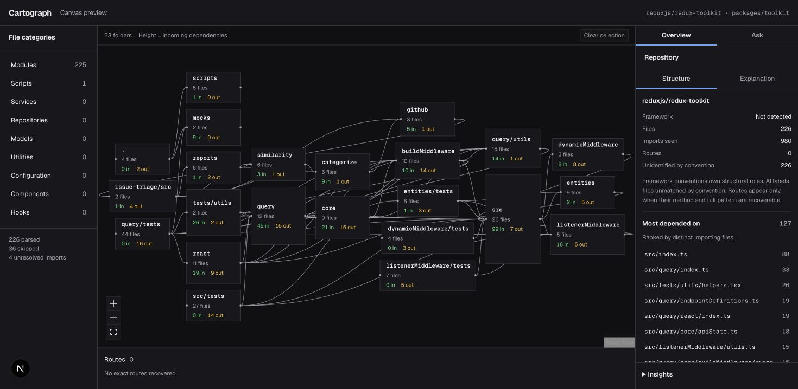

Developer tools · AI integration
Cartograph
Find your way through an unfamiliar codebase.
I built an interactive explorer for public JavaScript and TypeScript repositories. It maps real imports so developers can follow dependencies, trace potential change impact, and ask questions about repository structure.
- Parsed imports with ts-morph and TypeScript module resolution, reporting unresolved connections explicitly.
- Shared graph traversal between the interactive map and the repository Q&A tools.
- Connected AI explanations to recorded repository facts, with organization access enforced in Postgres.

Code establishes the connections.
AI helps explain them.
Engineering notes Architecture, decisions & boundaries
Separate facts from explanations
A standalone parser resolves imports before AI is called. Pure graph functions calculate dependencies and dependents for both the map and agent tools, so structural answers use the same underlying data.
Make the limits visible
Skipped files and unresolved imports remain visible. Change impact is graph reachability, not a prediction of runtime failure. Support is limited to public JavaScript and TypeScript repositories.
Keep access scoped
Clerk organizations and Supabase row-level security control stored analyses. Short-lived grants scope agent lookups to one analysis. Recorded agent cases are checked against independent parser output.
Read the implementation evidence